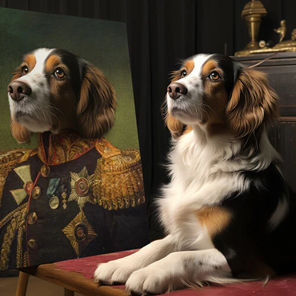
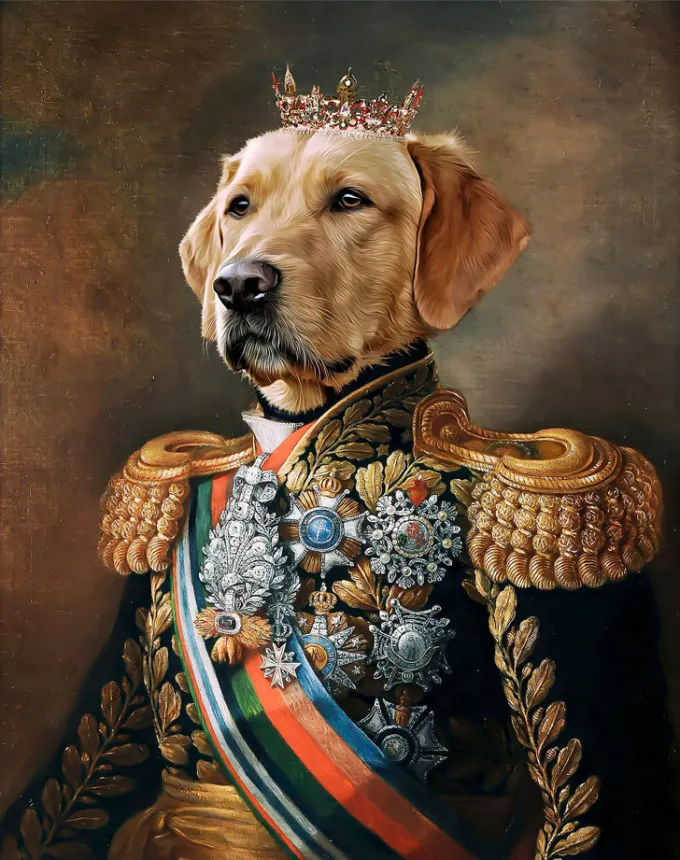

Get ready to melt your heart! Here at Pet Photography Studio, we capture the unique personalities and unconditional love our furry friends bring to our lives. Browse our gallery for a glimpse into the magic we create during our pet photography sessions.
Finding Your Perfect Picture: Variety of Styles: We offer a range of pet photography styles to suit your taste, from playful outdoor adventures to elegant studio portraits. Filter by Pet: Looking for a specific breed or type of animal? Use the filter options to browse photos featuring your favorite furry companions. Capture the Moment: Find inspiration for your own pet's portrait session and see the joy we bring out in each animal. Ready to Schedule Your Session? Once you've browsed the gallery and fallen in love with our work, head over to our "Contact Us" page to get started! We'd be thrilled to create lasting memories of your beloved pet.
 